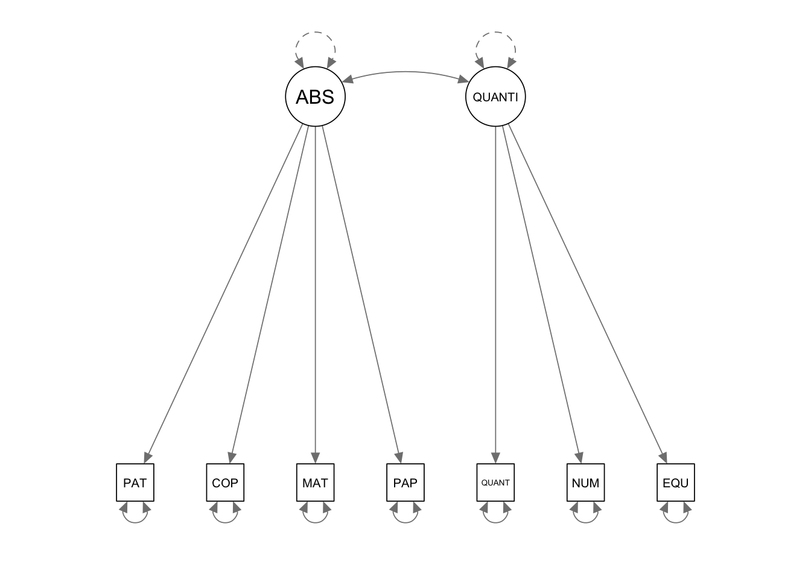
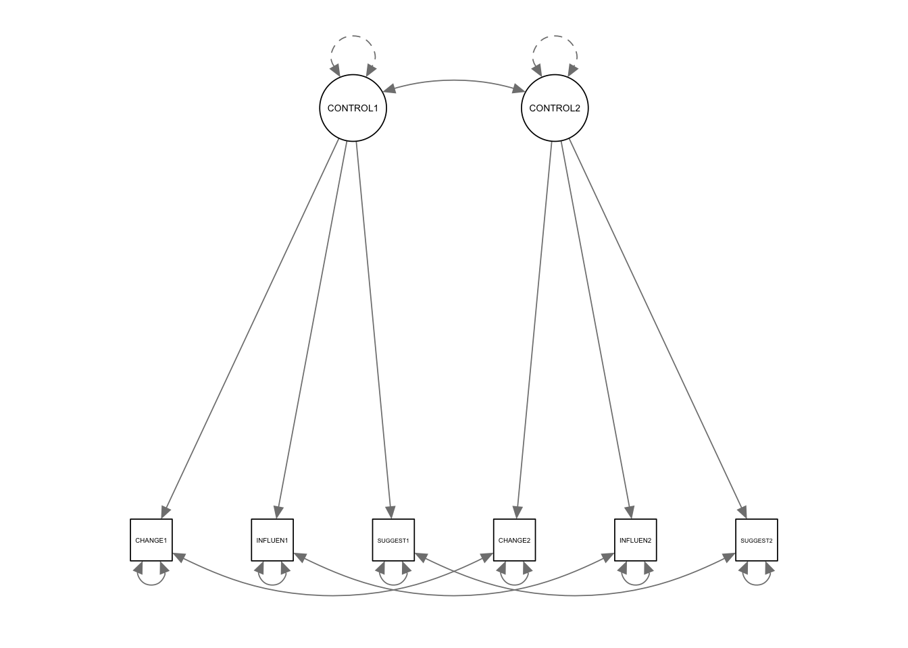
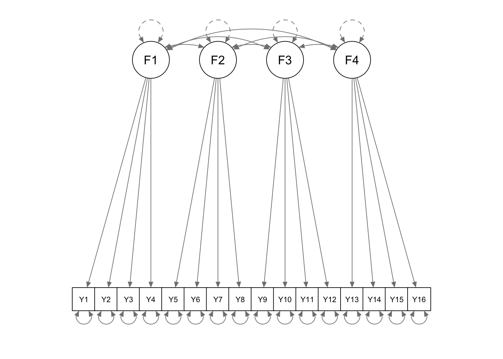
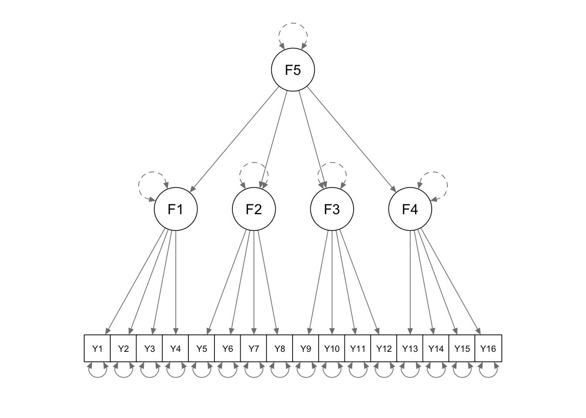
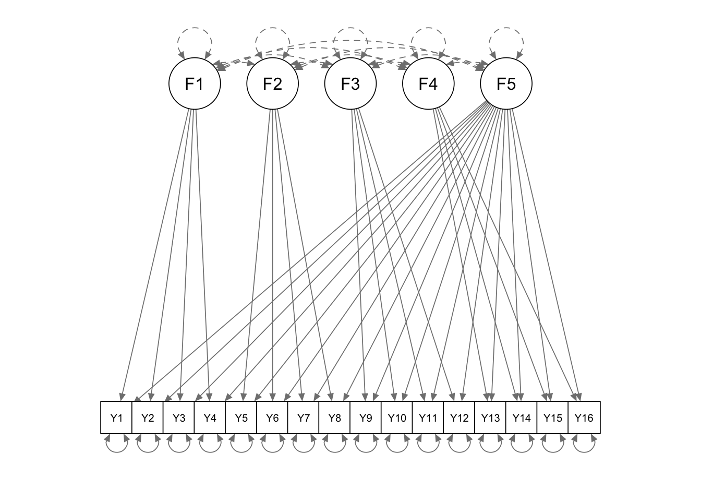

library(lavaan); library(semPlot); library(semTools)4 Confirmatory Factor Analysis
4.1 Syntax - R - One-Factor CFA
4.1.1 Use a sample covariance matrix an input
4.1.1.1 use the default reference indicator to identify the latent factor
AVRS <- '
64.000
37.120 64.000
35.200 32.640 64.000
28.800 32.640 33.280 64.000'
onef.cov <- getCov(AVRS, names = c("PATTERN", "COPYING", "MATRICES", "PAPERCUT"))Warning: 'getCov' is deprecated.
Use 'lav_getcov' instead.
See help("Deprecated")# Specify and fit the one-factor model
onef.model <- ' F1 =~ PATTERN + COPYING + MATRICES + PAPERCUT'
onef.fit <- cfa(onef.model, sample.cov = onef.cov, sample.nobs = 313)
summary(onef.fit, fit.measures = TRUE, standardized = TRUE)lavaan 0.6-21 ended normally after 40 iterations
Estimator ML
Optimization method NLMINB
Number of model parameters 8
Number of observations 313
Model Test User Model:
Test statistic 7.405
Degrees of freedom 2
P-value (Chi-square) 0.025
Model Test Baseline Model:
Test statistic 405.864
Degrees of freedom 6
P-value 0.000
User Model versus Baseline Model:
Comparative Fit Index (CFI) 0.986
Tucker-Lewis Index (TLI) 0.959
Loglikelihood and Information Criteria:
Loglikelihood user model (H0) -4178.740
Loglikelihood unrestricted model (H1) -4175.037
Akaike (AIC) 8373.479
Bayesian (BIC) 8403.449
Sample-size adjusted Bayesian (SABIC) 8378.075
Root Mean Square Error of Approximation:
RMSEA 0.093
90 Percent confidence interval - lower 0.028
90 Percent confidence interval - upper 0.169
P-value H_0: RMSEA <= 0.050 0.117
P-value H_0: RMSEA >= 0.080 0.691
Standardized Root Mean Square Residual:
SRMR 0.023
Parameter Estimates:
Standard errors Standard
Information Expected
Information saturated (h1) model Structured
Latent Variables:
Estimate Std.Err z-value P(>|z|) Std.lv Std.all
F1 =~
PATTERN 1.000 5.940 0.744
COPYING 1.006 0.089 11.364 0.000 5.978 0.748
MATRICES 0.978 0.088 11.145 0.000 5.808 0.727
PAPERCUT 0.895 0.086 10.368 0.000 5.318 0.666
Variances:
Estimate Std.Err z-value P(>|z|) Std.lv Std.all
.PATTERN 28.512 3.230 8.828 0.000 28.512 0.447
.COPYING 28.057 3.218 8.719 0.000 28.057 0.440
.MATRICES 30.066 3.275 9.181 0.000 30.066 0.471
.PAPERCUT 35.514 3.489 10.178 0.000 35.514 0.557
F1 35.284 5.104 6.913 0.000 1.000 1.0004.1.1.2 use an alternate reference indicator to identify the latent factor
onef.model.altref <- ' F1 =~ NA*PATTERN + 1*COPYING + MATRICES + PAPERCUT'
onef.fit.altref <- cfa(onef.model.altref, sample.cov = onef.cov, sample.nobs = 313)
summary(onef.fit.altref, fit.measures = TRUE, standardized = TRUE)lavaan 0.6-21 ended normally after 46 iterations
Estimator ML
Optimization method NLMINB
Number of model parameters 8
Number of observations 313
Model Test User Model:
Test statistic 7.405
Degrees of freedom 2
P-value (Chi-square) 0.025
Model Test Baseline Model:
Test statistic 405.864
Degrees of freedom 6
P-value 0.000
User Model versus Baseline Model:
Comparative Fit Index (CFI) 0.986
Tucker-Lewis Index (TLI) 0.959
Loglikelihood and Information Criteria:
Loglikelihood user model (H0) -4178.740
Loglikelihood unrestricted model (H1) -4175.037
Akaike (AIC) 8373.479
Bayesian (BIC) 8403.449
Sample-size adjusted Bayesian (SABIC) 8378.075
Root Mean Square Error of Approximation:
RMSEA 0.093
90 Percent confidence interval - lower 0.028
90 Percent confidence interval - upper 0.169
P-value H_0: RMSEA <= 0.050 0.117
P-value H_0: RMSEA >= 0.080 0.691
Standardized Root Mean Square Residual:
SRMR 0.023
Parameter Estimates:
Standard errors Standard
Information Expected
Information saturated (h1) model Structured
Latent Variables:
Estimate Std.Err z-value P(>|z|) Std.lv Std.all
F1 =~
PATTERN 0.994 0.087 11.364 0.000 5.940 0.744
COPYING 1.000 5.978 0.748
MATRICES 0.971 0.087 11.190 0.000 5.808 0.727
PAPERCUT 0.890 0.085 10.406 0.000 5.318 0.666
Variances:
Estimate Std.Err z-value P(>|z|) Std.lv Std.all
.PATTERN 28.512 3.230 8.828 0.000 28.512 0.447
.COPYING 28.057 3.218 8.719 0.000 28.057 0.440
.MATRICES 30.066 3.275 9.181 0.000 30.066 0.471
.PAPERCUT 35.514 3.489 10.178 0.000 35.514 0.557
F1 35.739 5.128 6.969 0.000 1.000 1.0004.1.1.3 fix latent variance at 1 to identify the latent factor
onef.model.fixvar <- '
F1 =~ NA*PATTERN + COPYING + MATRICES + PAPERCUT
F1 ~~ 1*F1'
onef.fit.fixvar <- cfa(onef.model.fixvar, sample.cov = onef.cov, sample.nobs = 313)
summary(onef.fit.fixvar, fit.measures = TRUE, standardized = TRUE)lavaan 0.6-21 ended normally after 15 iterations
Estimator ML
Optimization method NLMINB
Number of model parameters 8
Number of observations 313
Model Test User Model:
Test statistic 7.405
Degrees of freedom 2
P-value (Chi-square) 0.025
Model Test Baseline Model:
Test statistic 405.864
Degrees of freedom 6
P-value 0.000
User Model versus Baseline Model:
Comparative Fit Index (CFI) 0.986
Tucker-Lewis Index (TLI) 0.959
Loglikelihood and Information Criteria:
Loglikelihood user model (H0) -4178.740
Loglikelihood unrestricted model (H1) -4175.037
Akaike (AIC) 8373.479
Bayesian (BIC) 8403.449
Sample-size adjusted Bayesian (SABIC) 8378.075
Root Mean Square Error of Approximation:
RMSEA 0.093
90 Percent confidence interval - lower 0.028
90 Percent confidence interval - upper 0.169
P-value H_0: RMSEA <= 0.050 0.117
P-value H_0: RMSEA >= 0.080 0.691
Standardized Root Mean Square Residual:
SRMR 0.023
Parameter Estimates:
Standard errors Standard
Information Expected
Information saturated (h1) model Structured
Latent Variables:
Estimate Std.Err z-value P(>|z|) Std.lv Std.all
F1 =~
PATTERN 5.940 0.430 13.827 0.000 5.940 0.744
COPYING 5.978 0.429 13.938 0.000 5.978 0.748
MATRICES 5.808 0.432 13.444 0.000 5.808 0.727
PAPERCUT 5.318 0.442 12.042 0.000 5.318 0.666
Variances:
Estimate Std.Err z-value P(>|z|) Std.lv Std.all
F1 1.000 1.000 1.000
.PATTERN 28.512 3.230 8.828 0.000 28.512 0.447
.COPYING 28.057 3.218 8.719 0.000 28.057 0.440
.MATRICES 30.066 3.275 9.181 0.000 30.066 0.471
.PAPERCUT 35.514 3.489 10.178 0.000 35.514 0.5574.1.1.4 another way to fix latent variance at 1
by adding the “std.lv = TRUE” argument to the cfa() function call
onef.model <- ' F1 =~ PATTERN + COPYING + MATRICES + PAPERCUT'
onef.fit.fixvar.2 <- cfa(onef.model, sample.cov = onef.cov, sample.nobs = 313, std.lv = TRUE)
summary(onef.fit.fixvar.2, fit.measures = TRUE, standardized = TRUE)lavaan 0.6-21 ended normally after 15 iterations
Estimator ML
Optimization method NLMINB
Number of model parameters 8
Number of observations 313
Model Test User Model:
Test statistic 7.405
Degrees of freedom 2
P-value (Chi-square) 0.025
Model Test Baseline Model:
Test statistic 405.864
Degrees of freedom 6
P-value 0.000
User Model versus Baseline Model:
Comparative Fit Index (CFI) 0.986
Tucker-Lewis Index (TLI) 0.959
Loglikelihood and Information Criteria:
Loglikelihood user model (H0) -4178.740
Loglikelihood unrestricted model (H1) -4175.037
Akaike (AIC) 8373.479
Bayesian (BIC) 8403.449
Sample-size adjusted Bayesian (SABIC) 8378.075
Root Mean Square Error of Approximation:
RMSEA 0.093
90 Percent confidence interval - lower 0.028
90 Percent confidence interval - upper 0.169
P-value H_0: RMSEA <= 0.050 0.117
P-value H_0: RMSEA >= 0.080 0.691
Standardized Root Mean Square Residual:
SRMR 0.023
Parameter Estimates:
Standard errors Standard
Information Expected
Information saturated (h1) model Structured
Latent Variables:
Estimate Std.Err z-value P(>|z|) Std.lv Std.all
F1 =~
PATTERN 5.940 0.430 13.827 0.000 5.940 0.744
COPYING 5.978 0.429 13.938 0.000 5.978 0.748
MATRICES 5.808 0.432 13.444 0.000 5.808 0.727
PAPERCUT 5.318 0.442 12.042 0.000 5.318 0.666
Variances:
Estimate Std.Err z-value P(>|z|) Std.lv Std.all
.PATTERN 28.512 3.230 8.828 0.000 28.512 0.447
.COPYING 28.057 3.218 8.719 0.000 28.057 0.440
.MATRICES 30.066 3.275 9.181 0.000 30.066 0.471
.PAPERCUT 35.514 3.489 10.178 0.000 35.514 0.557
F1 1.000 1.000 1.0004.1.2 Calculate coefficient omega \({\omega _u}\)
use reliability() function from the semTools package
library(semTools)
reliability(onef.fit.fixvar.2) F1
alpha 0.8125000
omega 0.8129938
omega2 0.8129938
omega3 0.8128802
avevar 0.5213312When raw data are available, the ci.reliability() function from the MBESS package can be used to get bootstrapped CI.
library(MBESS)
ci.reliability(data=rawdata, type="omega", interval.type="perc")4.2 Syntax - R - Two-Factor CFA
4.2.1 An exmaple
AVRS2F <- '
64.000
37.120 64.000
35.200 32.640 64.000
28.800 32.640 33.280 64.000
33.280 31.360 36.480 32.640 64.000
34.560 30.080 47.360 39.040 42.240 64.000
21.120 4.480 16.640 17.280 27.520 28.160 64.000'
twof.cov <- getCov(AVRS2F, names = c("PATTERN", "COPYING", "MATRICES", "PAPERCUT", "QUANT", "NUMBSER", "EQUATION"))
twof.model <- '
ABSVIS =~ PATTERN + COPYING + MATRICES + PAPERCUT
QUANTITA =~ QUANT + NUMBSER + EQUATION
ABSVIS ~~ QUANTITA'
twof.fit <- cfa (twof.model, sample.cov = twof.cov, sample.nobs = 313, std.lv = TRUE)
summary(twof.fit, fit.measures = TRUE, standardized = TRUE, rsquare = TRUE)lavaan 0.6-21 ended normally after 23 iterations
Estimator ML
Optimization method NLMINB
Number of model parameters 15
Number of observations 313
Model Test User Model:
Test statistic 110.322
Degrees of freedom 13
P-value (Chi-square) 0.000
Model Test Baseline Model:
Test statistic 1047.682
Degrees of freedom 21
P-value 0.000
User Model versus Baseline Model:
Comparative Fit Index (CFI) 0.905
Tucker-Lewis Index (TLI) 0.847
Loglikelihood and Information Criteria:
Loglikelihood user model (H0) -7192.765
Loglikelihood unrestricted model (H1) -7137.604
Akaike (AIC) 14415.530
Bayesian (BIC) 14471.723
Sample-size adjusted Bayesian (SABIC) 14424.148
Root Mean Square Error of Approximation:
RMSEA 0.155
90 Percent confidence interval - lower 0.129
90 Percent confidence interval - upper 0.182
P-value H_0: RMSEA <= 0.050 0.000
P-value H_0: RMSEA >= 0.080 1.000
Standardized Root Mean Square Residual:
SRMR 0.060
Parameter Estimates:
Standard errors Standard
Information Expected
Information saturated (h1) model Structured
Latent Variables:
Estimate Std.Err z-value P(>|z|) Std.lv Std.all
ABSVIS =~
PATTERN 5.532 0.416 13.308 0.000 5.532 0.693
COPYING 5.153 0.425 12.135 0.000 5.153 0.645
MATRICES 6.514 0.390 16.684 0.000 6.514 0.816
PAPERCUT 5.530 0.416 13.301 0.000 5.530 0.692
QUANTITA =~
QUANT 6.055 0.401 15.108 0.000 6.055 0.758
NUMBSER 7.160 0.376 19.047 0.000 7.160 0.896
EQUATION 3.670 0.451 8.146 0.000 3.670 0.460
Covariances:
Estimate Std.Err z-value P(>|z|) Std.lv Std.all
ABSVIS ~~
QUANTITA 0.938 0.024 39.281 0.000 0.938 0.938
Variances:
Estimate Std.Err z-value P(>|z|) Std.lv Std.all
.PATTERN 33.191 3.037 10.927 0.000 33.191 0.520
.COPYING 37.245 3.297 11.296 0.000 37.245 0.584
.MATRICES 21.357 2.389 8.941 0.000 21.357 0.335
.PAPERCUT 33.215 3.039 10.930 0.000 33.215 0.521
.QUANT 27.134 2.638 10.287 0.000 27.134 0.425
.NUMBSER 12.526 2.232 5.612 0.000 12.526 0.196
.EQUATION 50.326 4.159 12.101 0.000 50.326 0.789
ABSVIS 1.000 1.000 1.000
QUANTITA 1.000 1.000 1.000
R-Square:
Estimate
PATTERN 0.480
COPYING 0.416
MATRICES 0.665
PAPERCUT 0.479
QUANT 0.575
NUMBSER 0.804
EQUATION 0.211Obtain model-implied (fitted) covariance matrix and mean vector
fitted(twof.fit)$cov
PATTER COPYIN MATRIC PAPERC QUANT NUMBSE EQUATI
PATTERN 63.796
COPYING 28.505 63.796
MATRICES 36.039 33.567 63.796
PAPERCUT 30.593 28.494 36.025 63.796
QUANT 31.435 29.279 37.017 31.423 63.796
NUMBSER 37.174 34.624 43.775 37.159 43.355 63.796
EQUATION 19.054 17.747 22.438 19.047 22.222 26.279 63.796Obtain unstandardized residuals of a fitted model
resid(twof.fit)$type
[1] "raw"
$cov
PATTER COPYIN MATRIC PAPERC QUANT NUMBSE EQUATI
PATTERN 0.000
COPYING 8.496 0.000
MATRICES -0.952 -1.031 0.000
PAPERCUT -1.885 4.042 -2.851 0.000
QUANT 1.738 1.981 -0.654 1.113 0.000
NUMBSER -2.724 -4.640 3.434 1.756 -1.250 0.000
EQUATION 1.998 -13.281 -5.851 -1.822 5.210 1.791 0.000Obtain standardized residuals of a fitted model
resid(twof.fit, type="standardized")$type
[1] "standardized"
$cov
PATTER COPYIN MATRIC PAPERC QUANT
PATTERN -1.465951e+09
COPYING 4.439000e+00 0.000000e+00
MATRICES -9.220000e-01 -9.230000e-01 -1.946004e+09
PAPERCUT -1.239000e+00 2.247000e+00 -2.824000e+00 -1.761664e+09
QUANT 1.195000e+00 1.242000e+00 -6.040000e-01 7.320000e-01 -2.020251e+09
NUMBSER -3.145000e+00 -5.016000e+00 4.763000e+00 1.737000e+00 -4.772000e+00
EQUATION 8.640000e-01 -5.349000e+00 -3.404000e+00 -8.080000e-01 2.660000e+00
NUMBSE EQUATI
PATTERN
COPYING
MATRICES
PAPERCUT
QUANT
NUMBSER -2.415449e+09
EQUATION 1.918000e+00 -8.237232e+09Request a list of model matrices counting free parameters in the model
inspect(twof.fit)$lambda
ABSVIS QUANTI
PATTERN 1 0
COPYING 2 0
MATRICES 3 0
PAPERCUT 4 0
QUANT 0 5
NUMBSER 0 6
EQUATION 0 7
$theta
PATTER COPYIN MATRIC PAPERC QUANT NUMBSE EQUATI
PATTERN 9
COPYING 0 10
MATRICES 0 0 11
PAPERCUT 0 0 0 12
QUANT 0 0 0 0 13
NUMBSER 0 0 0 0 0 14
EQUATION 0 0 0 0 0 0 15
$psi
ABSVIS QUANTI
ABSVIS 0
QUANTITA 8 0Plot the path diagram
semPlot::semPaths(twof.fit)
4.2.2 Model comparison example - two-factor CFA model across time
WERHLE <- '
.903
1.522 7.126
.508 1.577 .933
.387 1.081 .527 1.117
1.036 3.499 1.363 1.715 6.065
.441 1.404 .674 .649 1.742 .974'
twof.acrosstime.cov <- getCov(WERHLE, names = c("CHANGE1", "INFLUEN1", "SUGGEST1", "CHANGE2", "INFLUEN2", "SUGGEST2"))
twof.acrosstime.model1 <- '
CONTROL1 =~ CHANGE1 + INFLUEN1 + SUGGEST1
CONTROL2 =~ CHANGE2 + INFLUEN2 + SUGGEST2'
twof.acrosstime.model2 <- '
CONTROL1 =~ CHANGE1 + INFLUEN1 + SUGGEST1
CONTROL2 =~ CHANGE2 + INFLUEN2 + SUGGEST2
CHANGE1 ~~ CHANGE2
INFLUEN1 ~~ INFLUEN2
SUGGEST1 ~~ SUGGEST2'
twof.acrosstime.model3 <- '
CONTROL1 =~ a*CHANGE1 + b*INFLUEN1 + c*SUGGEST1
CONTROL2 =~ a*CHANGE2 + b*INFLUEN2 + c*SUGGEST2'
twof.acrosstime.model4 <- '
CONTROL1 =~ a*CHANGE1 + b*INFLUEN1 + c*SUGGEST1
CONTROL2 =~ a*CHANGE2 + b*INFLUEN2 + c*SUGGEST2
CHANGE1 ~~ CHANGE2
INFLUEN1 ~~ INFLUEN2
SUGGEST1 ~~ SUGGEST2'
twof.acrosstime.fit1 <- cfa(twof.acrosstime.model1, sample.cov = twof.acrosstime.cov, sample.nobs = 119, std.lv = TRUE)
twof.acrosstime.fit2 <- cfa(twof.acrosstime.model2, sample.cov = twof.acrosstime.cov, sample.nobs = 119, std.lv = TRUE)
twof.acrosstime.fit3 <- cfa(twof.acrosstime.model3, sample.cov = twof.acrosstime.cov, sample.nobs = 119, std.lv = TRUE)
twof.acrosstime.fit4 <- cfa(twof.acrosstime.model4, sample.cov = twof.acrosstime.cov, sample.nobs = 119, std.lv = TRUE)
summary(twof.acrosstime.fit1, fit.measures = TRUE, standardized = TRUE, rsquare = TRUE)lavaan 0.6-21 ended normally after 20 iterations
Estimator ML
Optimization method NLMINB
Number of model parameters 13
Number of observations 119
Model Test User Model:
Test statistic 18.648
Degrees of freedom 8
P-value (Chi-square) 0.017
Model Test Baseline Model:
Test statistic 381.003
Degrees of freedom 15
P-value 0.000
User Model versus Baseline Model:
Comparative Fit Index (CFI) 0.971
Tucker-Lewis Index (TLI) 0.945
Loglikelihood and Information Criteria:
Loglikelihood user model (H0) -1047.844
Loglikelihood unrestricted model (H1) -1038.520
Akaike (AIC) 2121.689
Bayesian (BIC) 2157.817
Sample-size adjusted Bayesian (SABIC) 2116.719
Root Mean Square Error of Approximation:
RMSEA 0.106
90 Percent confidence interval - lower 0.042
90 Percent confidence interval - upper 0.169
P-value H_0: RMSEA <= 0.050 0.068
P-value H_0: RMSEA >= 0.080 0.785
Standardized Root Mean Square Residual:
SRMR 0.038
Parameter Estimates:
Standard errors Standard
Information Expected
Information saturated (h1) model Structured
Latent Variables:
Estimate Std.Err z-value P(>|z|) Std.lv Std.all
CONTROL1 =~
CHANGE1 0.645 0.081 7.924 0.000 0.645 0.681
INFLUEN1 1.985 0.222 8.950 0.000 1.985 0.747
SUGGEST1 0.815 0.077 10.630 0.000 0.815 0.847
CONTROL2 =~
CHANGE2 0.769 0.087 8.857 0.000 0.769 0.731
INFLUEN2 2.039 0.192 10.638 0.000 2.039 0.831
SUGGEST2 0.861 0.075 11.486 0.000 0.861 0.876
Covariances:
Estimate Std.Err z-value P(>|z|) Std.lv Std.all
CONTROL1 ~~
CONTROL2 0.846 0.047 18.040 0.000 0.846 0.846
Variances:
Estimate Std.Err z-value P(>|z|) Std.lv Std.all
.CHANGE1 0.480 0.073 6.614 0.000 0.480 0.536
.INFLUEN1 3.126 0.514 6.079 0.000 3.126 0.442
.SUGGEST1 0.261 0.059 4.409 0.000 0.261 0.282
.CHANGE2 0.517 0.079 6.578 0.000 0.517 0.466
.INFLUEN2 1.856 0.345 5.383 0.000 1.856 0.309
.SUGGEST2 0.225 0.052 4.371 0.000 0.225 0.233
CONTROL1 1.000 1.000 1.000
CONTROL2 1.000 1.000 1.000
R-Square:
Estimate
CHANGE1 0.464
INFLUEN1 0.558
SUGGEST1 0.718
CHANGE2 0.534
INFLUEN2 0.691
SUGGEST2 0.767summary(twof.acrosstime.fit2, fit.measures = TRUE, standardized = TRUE, rsquare = TRUE)lavaan 0.6-21 ended normally after 26 iterations
Estimator ML
Optimization method NLMINB
Number of model parameters 16
Number of observations 119
Model Test User Model:
Test statistic 7.750
Degrees of freedom 5
P-value (Chi-square) 0.171
Model Test Baseline Model:
Test statistic 381.003
Degrees of freedom 15
P-value 0.000
User Model versus Baseline Model:
Comparative Fit Index (CFI) 0.992
Tucker-Lewis Index (TLI) 0.977
Loglikelihood and Information Criteria:
Loglikelihood user model (H0) -1042.395
Loglikelihood unrestricted model (H1) -1038.520
Akaike (AIC) 2116.791
Bayesian (BIC) 2161.257
Sample-size adjusted Bayesian (SABIC) 2110.675
Root Mean Square Error of Approximation:
RMSEA 0.068
90 Percent confidence interval - lower 0.000
90 Percent confidence interval - upper 0.156
P-value H_0: RMSEA <= 0.050 0.310
P-value H_0: RMSEA >= 0.080 0.485
Standardized Root Mean Square Residual:
SRMR 0.029
Parameter Estimates:
Standard errors Standard
Information Expected
Information saturated (h1) model Structured
Latent Variables:
Estimate Std.Err z-value P(>|z|) Std.lv Std.all
CONTROL1 =~
CHANGE1 0.672 0.082 8.185 0.000 0.672 0.710
INFLUEN1 2.051 0.226 9.058 0.000 2.051 0.771
SUGGEST1 0.765 0.079 9.703 0.000 0.765 0.800
CONTROL2 =~
CHANGE2 0.782 0.087 8.952 0.000 0.782 0.744
INFLUEN2 2.107 0.193 10.903 0.000 2.107 0.859
SUGGEST2 0.813 0.077 10.585 0.000 0.813 0.835
Covariances:
Estimate Std.Err z-value P(>|z|) Std.lv Std.all
.CHANGE1 ~~
.CHANGE2 -0.016 0.053 -0.301 0.763 -0.016 -0.034
.INFLUEN1 ~~
.INFLUEN2 0.092 0.310 0.296 0.767 0.092 0.043
.SUGGEST1 ~~
.SUGGEST2 0.130 0.046 2.860 0.004 0.130 0.424
CONTROL1 ~~
CONTROL2 0.810 0.050 16.247 0.000 0.810 0.810
Variances:
Estimate Std.Err z-value P(>|z|) Std.lv Std.all
.CHANGE1 0.444 0.073 6.089 0.000 0.444 0.496
.INFLUEN1 2.864 0.547 5.236 0.000 2.864 0.405
.SUGGEST1 0.328 0.066 4.947 0.000 0.328 0.359
.CHANGE2 0.495 0.080 6.222 0.000 0.495 0.447
.INFLUEN2 1.579 0.373 4.239 0.000 1.579 0.262
.SUGGEST2 0.288 0.059 4.925 0.000 0.288 0.304
CONTROL1 1.000 1.000 1.000
CONTROL2 1.000 1.000 1.000
R-Square:
Estimate
CHANGE1 0.504
INFLUEN1 0.595
SUGGEST1 0.641
CHANGE2 0.553
INFLUEN2 0.738
SUGGEST2 0.696summary(twof.acrosstime.fit3, fit.measures = TRUE, standardized = TRUE, rsquare = TRUE)lavaan 0.6-21 ended normally after 17 iterations
Estimator ML
Optimization method NLMINB
Number of model parameters 13
Number of equality constraints 3
Number of observations 119
Model Test User Model:
Test statistic 20.206
Degrees of freedom 11
P-value (Chi-square) 0.043
Model Test Baseline Model:
Test statistic 381.003
Degrees of freedom 15
P-value 0.000
User Model versus Baseline Model:
Comparative Fit Index (CFI) 0.975
Tucker-Lewis Index (TLI) 0.966
Loglikelihood and Information Criteria:
Loglikelihood user model (H0) -1048.623
Loglikelihood unrestricted model (H1) -1038.520
Akaike (AIC) 2117.247
Bayesian (BIC) 2145.038
Sample-size adjusted Bayesian (SABIC) 2113.424
Root Mean Square Error of Approximation:
RMSEA 0.084
90 Percent confidence interval - lower 0.015
90 Percent confidence interval - upper 0.141
P-value H_0: RMSEA <= 0.050 0.154
P-value H_0: RMSEA >= 0.080 0.590
Standardized Root Mean Square Residual:
SRMR 0.055
Parameter Estimates:
Standard errors Standard
Information Expected
Information saturated (h1) model Structured
Latent Variables:
Estimate Std.Err z-value P(>|z|) Std.lv Std.all
CONTROL1 =~
CHANGE1 (a) 0.706 0.065 10.787 0.000 0.706 0.717
INFLUEN1 (b) 2.014 0.164 12.299 0.000 2.014 0.753
SUGGEST1 (c) 0.838 0.063 13.395 0.000 0.838 0.854
CONTROL2 =~
CHANGE2 (a) 0.706 0.065 10.787 0.000 0.706 0.696
INFLUEN2 (b) 2.014 0.164 12.299 0.000 2.014 0.829
SUGGEST2 (c) 0.838 0.063 13.395 0.000 0.838 0.869
Covariances:
Estimate Std.Err z-value P(>|z|) Std.lv Std.all
CONTROL1 ~~
CONTROL2 0.843 0.047 17.998 0.000 0.843 0.843
Variances:
Estimate Std.Err z-value P(>|z|) Std.lv Std.all
.CHANGE1 0.471 0.072 6.516 0.000 0.471 0.486
.INFLUEN1 3.107 0.498 6.242 0.000 3.107 0.434
.SUGGEST1 0.261 0.056 4.630 0.000 0.261 0.271
.CHANGE2 0.529 0.078 6.797 0.000 0.529 0.515
.INFLUEN2 1.851 0.341 5.435 0.000 1.851 0.313
.SUGGEST2 0.227 0.050 4.564 0.000 0.227 0.244
CONTROL1 1.000 1.000 1.000
CONTROL2 1.000 1.000 1.000
R-Square:
Estimate
CHANGE1 0.514
INFLUEN1 0.566
SUGGEST1 0.729
CHANGE2 0.485
INFLUEN2 0.687
SUGGEST2 0.756summary(twof.acrosstime.fit4, fit.measures = TRUE, standardized = TRUE, rsquare = TRUE)lavaan 0.6-21 ended normally after 24 iterations
Estimator ML
Optimization method NLMINB
Number of model parameters 16
Number of equality constraints 3
Number of observations 119
Model Test User Model:
Test statistic 9.022
Degrees of freedom 8
P-value (Chi-square) 0.340
Model Test Baseline Model:
Test statistic 381.003
Degrees of freedom 15
P-value 0.000
User Model versus Baseline Model:
Comparative Fit Index (CFI) 0.997
Tucker-Lewis Index (TLI) 0.995
Loglikelihood and Information Criteria:
Loglikelihood user model (H0) -1043.031
Loglikelihood unrestricted model (H1) -1038.520
Akaike (AIC) 2112.062
Bayesian (BIC) 2148.191
Sample-size adjusted Bayesian (SABIC) 2107.093
Root Mean Square Error of Approximation:
RMSEA 0.033
90 Percent confidence interval - lower 0.000
90 Percent confidence interval - upper 0.116
P-value H_0: RMSEA <= 0.050 0.548
P-value H_0: RMSEA >= 0.080 0.224
Standardized Root Mean Square Residual:
SRMR 0.048
Parameter Estimates:
Standard errors Standard
Information Expected
Information saturated (h1) model Structured
Latent Variables:
Estimate Std.Err z-value P(>|z|) Std.lv Std.all
CONTROL1 =~
CHANGE1 (a) 0.725 0.065 11.116 0.000 0.725 0.740
INFLUEN1 (b) 2.081 0.168 12.415 0.000 2.081 0.776
SUGGEST1 (c) 0.789 0.067 11.687 0.000 0.789 0.809
CONTROL2 =~
CHANGE2 (a) 0.725 0.065 11.116 0.000 0.725 0.714
INFLUEN2 (b) 2.081 0.168 12.415 0.000 2.081 0.858
SUGGEST2 (c) 0.789 0.067 11.687 0.000 0.789 0.825
Covariances:
Estimate Std.Err z-value P(>|z|) Std.lv Std.all
.CHANGE1 ~~
.CHANGE2 -0.018 0.053 -0.336 0.737 -0.018 -0.038
.INFLUEN1 ~~
.INFLUEN2 0.085 0.309 0.274 0.784 0.085 0.040
.SUGGEST1 ~~
.SUGGEST2 0.132 0.046 2.897 0.004 0.132 0.428
CONTROL1 ~~
CONTROL2 0.807 0.050 16.183 0.000 0.807 0.807
Variances:
Estimate Std.Err z-value P(>|z|) Std.lv Std.all
.CHANGE1 0.434 0.072 6.016 0.000 0.434 0.452
.INFLUEN1 2.862 0.521 5.492 0.000 2.862 0.398
.SUGGEST1 0.328 0.064 5.080 0.000 0.328 0.345
.CHANGE2 0.507 0.078 6.477 0.000 0.507 0.491
.INFLUEN2 1.558 0.367 4.243 0.000 1.558 0.265
.SUGGEST2 0.292 0.058 5.061 0.000 0.292 0.319
CONTROL1 1.000 1.000 1.000
CONTROL2 1.000 1.000 1.000
R-Square:
Estimate
CHANGE1 0.548
INFLUEN1 0.602
SUGGEST1 0.655
CHANGE2 0.509
INFLUEN2 0.735
SUGGEST2 0.681Use the anova() function or the lavTestLRT() function from lavaan to compare nested models
anova(twof.acrosstime.fit1, twof.acrosstime.fit2)
Chi-Squared Difference Test
Df AIC BIC Chisq Chisq diff RMSEA Df diff
twof.acrosstime.fit2 5 2116.8 2161.3 7.750
twof.acrosstime.fit1 8 2121.7 2157.8 18.648 10.898 0.14874 3
Pr(>Chisq)
twof.acrosstime.fit2
twof.acrosstime.fit1 0.01229 *
---
Signif. codes: 0 '***' 0.001 '**' 0.01 '*' 0.05 '.' 0.1 ' ' 1lavTestLRT(twof.acrosstime.fit1, twof.acrosstime.fit2)
Chi-Squared Difference Test
Df AIC BIC Chisq Chisq diff RMSEA Df diff
twof.acrosstime.fit2 5 2116.8 2161.3 7.750
twof.acrosstime.fit1 8 2121.7 2157.8 18.648 10.898 0.14874 3
Pr(>Chisq)
twof.acrosstime.fit2
twof.acrosstime.fit1 0.01229 *
---
Signif. codes: 0 '***' 0.001 '**' 0.01 '*' 0.05 '.' 0.1 ' ' 1Plot the path diagram
semPlot::semPaths(twof.acrosstime.fit2)
4.3 Syntax - Mplus - One-Factor CFA
4.3.1 Use a sample covariance matrix an input
4.3.1.1 use the default reference indicator to identify the latent factor
TITLE: ONE FACTOR CONFIRMATORY FACTOR ANALYSIS;
ABSTRACT VISUAL REASONING SCALE - SB4
DATA: FILE IS "data\AVRS.DAT";
TYPE IS COVARIANCE;
NOBSERVATIONS ARE 313;
VARIABLE: NAMES ARE PATTERN COPYING MATRICES PAPERCUT;
MODEL: F1 BY PATTERN COPYING MATRICES PAPERCUT;
OUTPUT: SAMPSTAT STANDARDIZED(STDYX)RESIDUAL;4.3.1.2 use an alternate reference indicator to identify the latent factor
TITLE: ONE FACTOR CONFIRMATORY FACTOR ANALYSIS;
ABSTRACT VISUAL REASONING SCALE - SB4
DATA: FILE IS "data\AVRS.DAT";
TYPE IS COVARIANCE;
NOBSERVATIONS ARE 313;
VARIABLE: NAMES ARE PATTERN COPYING MATRICES PAPERCUT;
MODEL: F1 BY PATTERN* COPYING@1 MATRICES PAPERCUT;
OUTPUT: SAMPSTAT STANDARDIZED(STDYX) RESIDUAL;4.3.1.3 fix latent variance at 1 to identify the latent factor
TITLE: ONE FACTOR CONFIRMATORY FACTOR ANALYSIS;
ABSTRACT VISUAL REASONING SCALE - SB4
DATA: FILE IS "data\AVRS.DAT";
TYPE IS COVARIANCE;
NOBSERVATIONS ARE 313;
VARIABLE: NAMES ARE PATTERN COPYING MATRICES PAPERCUT;
MODEL: F1 BY PATTERN* COPYING MATRICES PAPERCUT;
F1@1;
OUTPUT: SAMPSTAT STANDARDIZED(STDYX) RESIDUAL;4.3.2 Calculate coefficient omega \({\omega _u}\)
TITLE: ONE FACTOR CONFIRMATORY FACTOR ANALYSIS;
ABSTRACT VISUAL REASONING SCALE - SB4
CALCULATE COEFFICIENT OMEGA
DATA: FILE IS "data\AVRS.DAT";
TYPE IS COVARIANCE;
NOBSERVATIONS ARE 313;
VARIABLE: NAMES ARE PATTERN COPYING MATRICES PAPERCUT;
MODEL: F1 BY PATTERN* COPYING MATRICES PAPERCUT (la1-la4);
F1@1;
PATTERN COPYING MATRICES PAPERCUT (e1-e4);
MODEL CONSTRAINT:
NEW(omega);
omega=(la1+la2+la3+la4)^2/((la1+la2+la3+la4)^2+e1+e2+e3+e4);
OUTPUT: 4.4 Syntax - Mplus - TWo-Factor CFA
4.4.1 An example
TITLE: TWO FACTOR CONFIRMATORY FACTOR ANALYSIS;
ABSTRACT VISUAL REASONING SCALE - SB4
DATA: FILE IS "data\AVRS2F.TXT";
TYPE IS COVARIANCE;
NOBSERVATIONS ARE 313;
VARIABLE: NAMES ARE PATTERN COPYING MATRICES PAPERCUT
QUANT NUMBSER EQUATION;
MODEL: ABSVIS BY PATTERN* COPYING MATRICES PAPERCUT;
QUANTITA BY QUANT* NUMBSER EQUATION;
ABSVIS WITH QUANTITA;
ABSVIS@1; QUANTITA@1;
OUTPUT: SAMPSTAT STANDARDIZED(STDYX) RESIDUAL;4.4.2 Model comparison example - two-factor CFA model across time
TITLE: TWO FACTOR CONFIRMATORY FACTOR ANALYSIS
ACROSS TIME
DATA: FILE IS "data\WERHLE.txt";
TYPE IS COVARIANCE;
NOBSERVATIONS ARE 119;
VARIABLE: NAMES ARE CHANGE1 INFLUEN1 SUGGEST1
CHANGE2 INFLUEN2 SUGGEST2;
MODEL: CONTROL1 BY CHANGE1* INFLUEN1 SUGGEST1;
CONTROL2 BY CHANGE2* INFLUEN2 SUGGEST2;
CONTROL1 WITH CONTROL2;
CONTROL1@1; CONTROL2@1;
OUTPUT: SAMPSTAT STANDARDIZED RESIDUAL;TITLE: TWO FACTOR CONFIRMATORY FACTOR ANALYSIS
ACROSS TIME - CORRELATED ERRORS
DATA: FILE IS "data\WERHLE.txt";
TYPE IS COVARIANCE;
NOBSERVATIONS ARE 119;
VARIABLE: NAMES ARE CHANGE1 INFLUEN1 SUGGEST1
CHANGE2 INFLUEN2 SUGGEST2;
MODEL: CONTROL1 BY CHANGE1* INFLUEN1 SUGGEST1;
CONTROL2 BY CHANGE2* INFLUEN2 SUGGEST2;
CONTROL1 WITH CONTROL2;
CONTROL1@1; CONTROL2@1;
CHANGE1 WITH CHANGE2;
INFLUEN1 WITH INFLUEN2;
SUGGEST1 WITH SUGGEST2;
OUTPUT: SAMPSTAT STANDARDIZED RESIDUAL;TITLE: TWO FACTOR CONFIRMATORY FACTOR ANALYSIS
ACROSS TIME - PATH CONSTRAINTS
DATA: FILE IS "data\WERHLE.txt";
TYPE IS COVARIANCE;
NOBSERVATIONS ARE 119;
VARIABLE: NAMES ARE CHANGE1 INFLUEN1 SUGGEST1
CHANGE2 INFLUEN2 SUGGEST2;
MODEL: CONTROL1 BY CHANGE1* (1)
INFLUEN1 (2)
SUGGEST1 (3);
CONTROL2 BY CHANGE2* (1)
INFLUEN2 (2)
SUGGEST2 (3);
CONTROL1 WITH CONTROL2;
CONTROL1@1; CONTROL2@1;
OUTPUT: SAMPSTAT STANDARDIZED RESIDUAL;TITLE: TWO FACTOR CONFIRMATORY FACTOR ANALYSIS
ACROSS TIME - PATH CONSTRAINTS AND CORRELATED ERRORS
DATA: FILE IS "data\WERHLE.txt";
TYPE IS COVARIANCE;
NOBSERVATIONS ARE 119;
VARIABLE: NAMES ARE CHANGE1 INFLUEN1 SUGGEST1
CHANGE2 INFLUEN2 SUGGEST2;
MODEL: CONTROL1 BY CHANGE1* (1)
INFLUEN1 (2)
SUGGEST1 (3);
CONTROL2 BY CHANGE2* (1)
INFLUEN2 (2)
SUGGEST2 (3);
CONTROL1 WITH CONTROL2;
CONTROL1@1; CONTROL2@1;
CHANGE1 WITH CHANGE2;
INFLUEN1 WITH INFLUEN2;
SUGGEST1 WITH SUGGEST2;
OUTPUT: SAMPSTAT STANDARDIZED RESIDUAL;4.5 Model Respecification
4.5.1 Lagrange Multiplier test for adding paths
4.5.1.1 R
Modification indices can be requested by adding the argument modindices = TRUE in the summary() call, or by calling the function modindices() directly. The modindices() function returns a data frame which you can sort or filter to extract what you want.
AIRQUALITY <- '
.331
.431 1.160
.406 .847 .898
.216 .272 .312 .268'
cfa.lm.cov <- getCov(AIRQUALITY, names = c("OVERALL", "CLARITY", "COLOR", "ODOR"))
cfa.lm.model <- '
QUALITY =~ OVERALL + CLARITY + COLOR + ODOR'
cfa.lm.fit <- cfa(cfa.lm.model, sample.cov = cfa.lm.cov, sample.nobs = 57, std.lv = TRUE)
summary(cfa.lm.fit, fit.measures = TRUE, standardized = TRUE, rsquare = TRUE, modindices = TRUE)lavaan 0.6-21 ended normally after 23 iterations
Estimator ML
Optimization method NLMINB
Number of model parameters 8
Number of observations 57
Model Test User Model:
Test statistic 16.325
Degrees of freedom 2
P-value (Chi-square) 0.000
Model Test Baseline Model:
Test statistic 163.272
Degrees of freedom 6
P-value 0.000
User Model versus Baseline Model:
Comparative Fit Index (CFI) 0.909
Tucker-Lewis Index (TLI) 0.727
Loglikelihood and Information Criteria:
Loglikelihood user model (H0) -180.152
Loglikelihood unrestricted model (H1) -171.990
Akaike (AIC) 376.304
Bayesian (BIC) 392.649
Sample-size adjusted Bayesian (SABIC) 367.500
Root Mean Square Error of Approximation:
RMSEA 0.354
90 Percent confidence interval - lower 0.209
90 Percent confidence interval - upper 0.523
P-value H_0: RMSEA <= 0.050 0.001
P-value H_0: RMSEA >= 0.080 0.998
Standardized Root Mean Square Residual:
SRMR 0.063
Parameter Estimates:
Standard errors Standard
Information Expected
Information saturated (h1) model Structured
Latent Variables:
Estimate Std.Err z-value P(>|z|) Std.lv Std.all
QUALITY =~
OVERALL 0.466 0.063 7.347 0.000 0.466 0.817
CLARITY 0.921 0.115 7.975 0.000 0.921 0.863
COLOR 0.882 0.096 9.146 0.000 0.882 0.939
ODOR 0.351 0.061 5.736 0.000 0.351 0.685
Variances:
Estimate Std.Err z-value P(>|z|) Std.lv Std.all
.OVERALL 0.108 0.025 4.409 0.000 0.108 0.332
.CLARITY 0.292 0.075 3.885 0.000 0.292 0.256
.COLOR 0.104 0.049 2.103 0.035 0.104 0.118
.ODOR 0.140 0.028 4.962 0.000 0.140 0.531
QUALITY 1.000 1.000 1.000
R-Square:
Estimate
OVERALL 0.668
CLARITY 0.744
COLOR 0.882
ODOR 0.469
Modification Indices:
lhs op rhs mi epc sepc.lv sepc.all sepc.nox
1 OVERALL ~~ CLARITY 0.196 -0.019 -0.019 -0.108 -0.108
2 OVERALL ~~ COLOR 7.630 -0.123 -0.123 -1.159 -1.159
3 OVERALL ~~ ODOR 12.542 0.069 0.069 0.558 0.558
4 CLARITY ~~ COLOR 12.542 0.341 0.341 1.959 1.959
5 CLARITY ~~ ODOR 7.630 -0.097 -0.097 -0.479 -0.479
6 COLOR ~~ ODOR 0.196 -0.014 -0.014 -0.115 -0.115Alternatively, use the modindices() function. Modification indices are printed out for each nonfree (or nonredundant) parameter. The modification indices are supplemented by the expected parameter change (EPC) values (column epc). The last three columns contain the standardized EPC values (sepc.lv: only standardizing the latent variables; sepc.all: standardizing all variables; sepc.nox: standardizing all but exogenous observed variables).
modindices(cfa.lm.fit) lhs op rhs mi epc sepc.lv sepc.all sepc.nox
10 OVERALL ~~ CLARITY 0.196 -0.019 -0.019 -0.108 -0.108
11 OVERALL ~~ COLOR 7.630 -0.123 -0.123 -1.159 -1.159
12 OVERALL ~~ ODOR 12.542 0.069 0.069 0.558 0.558
13 CLARITY ~~ COLOR 12.542 0.341 0.341 1.959 1.959
14 CLARITY ~~ ODOR 7.630 -0.097 -0.097 -0.479 -0.479
15 COLOR ~~ ODOR 0.196 -0.014 -0.014 -0.115 -0.115Add a path based on modification indices and theoretical justification. Add one path at a time.
cfa.lm.model.add.covariance <- '
QUALITY =~ OVERALL + CLARITY + COLOR + ODOR
CLARITY ~~ COLOR' #covariance between residuals added
cfa.lm.add.covariance.fit <- cfa(cfa.lm.model.add.covariance, sample.cov = cfa.lm.cov, sample.nobs = 57, std.lv = TRUE)
summary(cfa.lm.add.covariance.fit, fit.measures = TRUE, standardized = TRUE, rsquare = TRUE, modindices = TRUE)lavaan 0.6-21 ended normally after 22 iterations
Estimator ML
Optimization method NLMINB
Number of model parameters 9
Number of observations 57
Model Test User Model:
Test statistic 4.299
Degrees of freedom 1
P-value (Chi-square) 0.038
Model Test Baseline Model:
Test statistic 163.272
Degrees of freedom 6
P-value 0.000
User Model versus Baseline Model:
Comparative Fit Index (CFI) 0.979
Tucker-Lewis Index (TLI) 0.874
Loglikelihood and Information Criteria:
Loglikelihood user model (H0) -174.139
Loglikelihood unrestricted model (H1) -171.990
Akaike (AIC) 366.278
Bayesian (BIC) 384.666
Sample-size adjusted Bayesian (SABIC) 356.374
Root Mean Square Error of Approximation:
RMSEA 0.241
90 Percent confidence interval - lower 0.046
90 Percent confidence interval - upper 0.493
P-value H_0: RMSEA <= 0.050 0.052
P-value H_0: RMSEA >= 0.080 0.925
Standardized Root Mean Square Residual:
SRMR 0.024
Parameter Estimates:
Standard errors Standard
Information Expected
Information saturated (h1) model Structured
Latent Variables:
Estimate Std.Err z-value P(>|z|) Std.lv Std.all
QUALITY =~
OVERALL 0.536 0.062 8.640 0.000 0.536 0.940
CLARITY 0.771 0.129 5.988 0.000 0.771 0.722
COLOR 0.749 0.109 6.864 0.000 0.749 0.797
ODOR 0.396 0.060 6.585 0.000 0.396 0.771
Covariances:
Estimate Std.Err z-value P(>|z|) Std.lv Std.all
.CLARITY ~~
.COLOR 0.255 0.086 2.952 0.003 0.255 0.608
Variances:
Estimate Std.Err z-value P(>|z|) Std.lv Std.all
.OVERALL 0.038 0.029 1.311 0.190 0.038 0.115
.CLARITY 0.545 0.121 4.490 0.000 0.545 0.478
.COLOR 0.322 0.081 3.950 0.000 0.322 0.365
.ODOR 0.107 0.025 4.258 0.000 0.107 0.405
QUALITY 1.000 1.000 1.000
R-Square:
Estimate
OVERALL 0.885
CLARITY 0.522
COLOR 0.635
ODOR 0.595
Modification Indices:
lhs op rhs mi epc sepc.lv sepc.all sepc.nox
1 OVERALL ~~ CLARITY 4.141 0.078 0.078 0.548 0.548
2 OVERALL ~~ COLOR 4.141 -0.076 -0.076 -0.692 -0.692
3 CLARITY ~~ ODOR 4.141 -0.058 -0.058 -0.240 -0.240
4 COLOR ~~ ODOR 4.141 0.056 0.056 0.303 0.3034.5.1.2 Mplus
TITLE: AIR QUALITY MODEL
DATA: FILE IS AIRQUALITY.txt;
TYPE IS COVARIANCE;
NOBSERVATIONS ARE 57;
VARIABLE: NAMES ARE OVERALL CLARITY COLOR ODOR;
MODEL: QUALITY BY OVERALL* CLARITY COLOR ODOR;
QUALITY@1;
OUTPUT: STANDARDIZED(STDYX) MODINDICES(3.84);TITLE: AIR QUALITY MODEL WITH ERROR COVARIANCE
DATA: FILE IS AIRQUALITY.txt;
TYPE IS COVARIANCE;
NOBSERVATIONS ARE 57;
VARIABLE: NAMES ARE OVERALL CLARITY COLOR ODOR;
MODEL: QUALITY BY OVERALL* CLARITY COLOR ODOR;
QUALITY@1;
CLARITY WITH COLOR;
OUTPUT: STANDARDIZED(STDYX) MODINDICES(3.84);4.5.2 Wald test for dropping paths
4.5.2.1 R
Drop statistical nonsignificant paths one at a time.
POLDEM <- '
6.880
6.253 15.579
5.844 5.840 10.765
6.088 9.504 6.692 11.216
5.065 5.600 4.938 5.706 6.828
5.751 9.386 4.726 7.444 4.980 11.377
5.809 7.535 7.008 7.483 5.822 6.750 10.798
5.670 7.764 5.645 8.012 5.344 8.244 7.594 10.537'
cfa.wald.cov <- getCov(POLDEM, names = paste("Y", 1:8, sep=""))
cfa.wald.model <- '
F1 =~ a*Y1 + b*Y2 + c*Y3 + d*Y4
F2 =~ a*Y5 + b*Y6 + c*Y7 + d*Y8
Y1 ~~ Y5
Y2 ~~ Y6
Y3 ~~ Y7
Y4 ~~ Y8
Y2 ~~ Y4
Y6 ~~ Y8'
cfa.wald.fit <- cfa(cfa.wald.model, sample.cov = cfa.wald.cov, sample.nobs = 102, std.lv = TRUE)
summary(cfa.wald.fit, fit.measures = TRUE, standardized = TRUE, rsquare = TRUE, modindices = TRUE)Warning: lavaan->modificationIndices():
the modindices() function ignores equality constraints; use lavTestScore()
to assess the impact of releasing one or multiple constraints.lavaan 0.6-21 ended normally after 47 iterations
Estimator ML
Optimization method NLMINB
Number of model parameters 23
Number of equality constraints 4
Number of observations 102
Model Test User Model:
Test statistic 21.121
Degrees of freedom 17
P-value (Chi-square) 0.221
Model Test Baseline Model:
Test statistic 627.140
Degrees of freedom 28
P-value 0.000
User Model versus Baseline Model:
Comparative Fit Index (CFI) 0.993
Tucker-Lewis Index (TLI) 0.989
Loglikelihood and Information Criteria:
Loglikelihood user model (H0) -1797.133
Loglikelihood unrestricted model (H1) -1786.572
Akaike (AIC) 3632.266
Bayesian (BIC) 3682.140
Sample-size adjusted Bayesian (SABIC) 3622.126
Root Mean Square Error of Approximation:
RMSEA 0.049
90 Percent confidence interval - lower 0.000
90 Percent confidence interval - upper 0.107
P-value H_0: RMSEA <= 0.050 0.468
P-value H_0: RMSEA >= 0.080 0.225
Standardized Root Mean Square Residual:
SRMR 0.059
Parameter Estimates:
Standard errors Standard
Information Expected
Information saturated (h1) model Structured
Latent Variables:
Estimate Std.Err z-value P(>|z|) Std.lv Std.all
F1 =~
Y1 (a) 2.154 0.195 11.046 0.000 2.154 0.842
Y2 (b) 2.604 0.275 9.456 0.000 2.604 0.687
Y3 (c) 2.604 0.243 10.704 0.000 2.604 0.759
Y4 (d) 2.740 0.240 11.421 0.000 2.740 0.836
F2 =~
Y5 (a) 2.154 0.195 11.046 0.000 2.154 0.806
Y6 (b) 2.604 0.275 9.456 0.000 2.604 0.765
Y7 (c) 2.604 0.243 10.704 0.000 2.604 0.820
Y8 (d) 2.740 0.240 11.421 0.000 2.740 0.837
Covariances:
Estimate Std.Err z-value P(>|z|) Std.lv Std.all
.Y1 ~~
.Y5 0.581 0.314 1.852 0.064 0.581 0.266
.Y2 ~~
.Y6 2.072 0.631 3.285 0.001 2.072 0.343
.Y3 ~~
.Y7 0.746 0.526 1.418 0.156 0.746 0.184
.Y4 ~~
.Y8 0.470 0.390 1.206 0.228 0.470 0.146
.Y2 ~~
.Y4 1.408 0.587 2.398 0.017 1.408 0.284
.Y6 ~~
.Y8 1.244 0.500 2.487 0.013 1.244 0.316
F1 ~~
F2 0.966 0.025 38.699 0.000 0.966 0.966
Variances:
Estimate Std.Err z-value P(>|z|) Std.lv Std.all
.Y1 1.898 0.371 5.116 0.000 1.898 0.290
.Y2 7.578 1.173 6.463 0.000 7.578 0.528
.Y3 4.985 0.828 6.017 0.000 4.985 0.424
.Y4 3.234 0.619 5.227 0.000 3.234 0.301
.Y5 2.505 0.446 5.616 0.000 2.505 0.351
.Y6 4.818 0.796 6.056 0.000 4.818 0.415
.Y7 3.294 0.601 5.483 0.000 3.294 0.327
.Y8 3.219 0.618 5.206 0.000 3.219 0.300
F1 1.000 1.000 1.000
F2 1.000 1.000 1.000
R-Square:
Estimate
Y1 0.710
Y2 0.472
Y3 0.576
Y4 0.699
Y5 0.649
Y6 0.585
Y7 0.673
Y8 0.700
Modification Indices:
lhs op rhs mi epc sepc.lv sepc.all sepc.nox
1 F1 ~~ F1 0.106 0.038 1.000 1.000 1.000
2 F2 ~~ F2 0.106 -0.038 -1.000 -1.000 -1.000
3 F1 =~ Y5 0.666 -0.162 -0.162 -0.061 -0.061
4 F1 =~ Y6 0.323 -0.159 -0.159 -0.047 -0.047
5 F1 =~ Y7 1.746 0.372 0.372 0.117 0.117
6 F1 =~ Y8 0.086 -0.068 -0.068 -0.021 -0.021
7 F2 =~ Y1 0.707 0.167 0.167 0.065 0.065
8 F2 =~ Y2 0.796 0.250 0.250 0.066 0.066
9 F2 =~ Y3 2.773 -0.471 -0.471 -0.137 -0.137
10 F2 =~ Y4 0.078 0.065 0.065 0.020 0.020
11 Y1 ~~ Y2 0.010 -0.039 -0.039 -0.010 -0.010
12 Y1 ~~ Y3 4.064 0.770 0.770 0.250 0.250
13 Y1 ~~ Y4 0.812 -0.289 -0.289 -0.117 -0.117
14 Y1 ~~ Y6 1.866 0.409 0.409 0.135 0.135
15 Y1 ~~ Y7 0.756 -0.290 -0.290 -0.116 -0.116
16 Y1 ~~ Y8 0.388 -0.177 -0.177 -0.072 -0.072
17 Y2 ~~ Y3 1.110 -0.608 -0.608 -0.099 -0.099
18 Y2 ~~ Y5 0.001 -0.014 -0.014 -0.003 -0.003
19 Y2 ~~ Y7 0.733 0.418 0.418 0.084 0.084
20 Y2 ~~ Y8 0.731 0.509 0.509 0.103 0.103
21 Y3 ~~ Y4 0.054 0.106 0.106 0.026 0.026
22 Y3 ~~ Y5 0.013 0.046 0.046 0.013 0.013
23 Y3 ~~ Y6 2.121 -0.671 -0.671 -0.137 -0.137
24 Y3 ~~ Y8 0.876 -0.401 -0.401 -0.100 -0.100
25 Y4 ~~ Y5 0.090 0.098 0.098 0.034 0.034
26 Y4 ~~ Y6 1.688 0.656 0.656 0.166 0.166
27 Y4 ~~ Y7 0.192 -0.171 -0.171 -0.052 -0.052
28 Y5 ~~ Y6 0.829 -0.305 -0.305 -0.088 -0.088
29 Y5 ~~ Y7 0.466 0.245 0.245 0.085 0.085
30 Y5 ~~ Y8 0.364 -0.189 -0.189 -0.067 -0.067
31 Y6 ~~ Y7 0.675 -0.338 -0.338 -0.085 -0.085
32 Y7 ~~ Y8 2.120 0.567 0.567 0.174 0.1744.5.2.2 Mplus
TITLE: POLITICAL DEMOCRACY MODEL - WALD TEST EXAMPLE
DATA: FILE IS "data\POLDEM.txt";
TYPE IS COVARIANCE;
NOBSERVATIONS ARE 102;
VARIABLE: NAMES ARE Y1-Y8;
MODEL: F1 BY Y1* (1)
Y2 (2)
Y3 (3)
Y4 (4);
F2 BY Y5* (1)
Y6 (2)
Y7 (3)
Y8 (4);
F1@1; F2@1;
F1 WITH F2;
Y1 WITH Y5;
Y2 WITH Y6;
Y3 WITH Y7;
Y4 WITH Y8;
Y2 WITH Y4;
Y6 WITH Y8;
OUTPUT: SAMPSTAT STANDARDIZED(STDYX);4.5.3 Higher-order factor models
4.5.3.1 R
SC.corr <- '
1.00
0.31 1.00
0.52 0.45 1.00
0.54 0.46 0.70 1.00
0.15 0.33 0.22 0.21 1.00
0.14 0.28 0.21 0.13 0.72 1.00
0.16 0.32 0.35 0.31 0.59 0.56 1.00
0.23 0.29 0.43 0.36 0.55 0.51 0.65 1.00
0.24 0.13 0.24 0.23 0.25 0.24 0.24 0.30 1.00
0.19 0.26 0.22 0.18 0.34 0.37 0.36 0.32 0.38 1.00
0.16 0.24 0.36 0.30 0.33 0.29 0.44 0.51 0.47 0.50 1.00
0.16 0.21 0.35 0.24 0.31 0.33 0.41 0.39 0.47 0.47 0.55 1.00
0.08 0.18 0.09 0.12 0.19 0.24 0.08 0.21 0.21 0.19 0.19 0.20 1.00
0.01 -0.01 0.03 0.02 0.10 0.13 0.03 0.05 0.26 0.17 0.23 0.26 0.33 1.00
0.06 0.19 0.22 0.22 0.23 0.24 0.20 0.26 0.16 0.23 0.38 0.24 0.42 0.40 1.00
0.04 0.17 0.10 0.07 0.26 0.24 0.12 0.26 0.16 0.22 0.32 0.17 0.42 0.42 0.65 1.00'
SC.SDs <- c(1.84, 1.94, 2.07, 1.82, 2.34, 2.61, 2.48, 2.34, 1.71, 1.93, 2.18, 1.94, 1.31, 1.57, 1.77, 1.47)
SC.cov <- getCov(SC.corr, sds = SC.SDs, names = paste("Y", 1:16, sep=""))
HOCFA.1storder.model <-
paste0('F1 =~ ', paste0('Y', 1:4, collapse=' + '), ' \n',
' F2 =~ ', paste0('Y', 5:8, collapse=' + '), ' \n',
' F3 =~ ', paste0('Y', 9:12, collapse=' + '), ' \n',
' F4 =~ ', paste0('Y', 13:16, collapse=' + '))
HOCFA.2ndorder.model <-
paste0('F1 =~ ', paste0('Y', 1:4, collapse=' + '), ' \n',
' F2 =~ ', paste0('Y', 5:8, collapse=' + '), ' \n',
' F3 =~ ', paste0('Y', 9:12, collapse=' + '), ' \n',
' F4 =~ ', paste0('Y', 13:16, collapse=' + '), ' \n',
' F5 =~ NA*F1 + F2 + F3 + F4
F5 ~~ 1*F5')
HOCFA.bifactor.model <-
paste0('F1 =~ ', paste0('Y', 1:4, collapse=' + '), ' \n',
' F2 =~ ', paste0('Y', 5:8, collapse=' + '), ' \n',
' F3 =~ ', paste0('Y', 9:12, collapse=' + '), ' \n',
' F4 =~ ', paste0('Y', 13:16, collapse=' + '), ' \n',
' F5 =~ ', paste0('Y', 1:16, collapse=' + '), ' \n',
' F1 ~~ 0*F2
F1 ~~ 0*F3
F1 ~~ 0*F4
F1 ~~ 0*F5
F2 ~~ 0*F3
F2 ~~ 0*F4
F2 ~~ 0*F5
F3 ~~ 0*F4
F3 ~~ 0*F5
F4 ~~ 0*F5')
HOCFA.1storder.fit <- cfa(HOCFA.1storder.model, sample.cov = SC.cov, sample.nobs = 251, std.lv = TRUE)
HOCFA.2ndorder.fit <- cfa(HOCFA.2ndorder.model, sample.cov = SC.cov, sample.nobs = 251, std.lv = TRUE)
HOCFA.bifactor.fit <- cfa(HOCFA.bifactor.model, sample.cov = SC.cov, sample.nobs = 251, std.lv = TRUE)
summary(HOCFA.1storder.fit, fit.measures = TRUE, standardized = TRUE, rsquare = TRUE) lavaan 0.6-21 ended normally after 21 iterations
Estimator ML
Optimization method NLMINB
Number of model parameters 38
Number of observations 251
Model Test User Model:
Test statistic 217.311
Degrees of freedom 98
P-value (Chi-square) 0.000
Model Test Baseline Model:
Test statistic 1691.802
Degrees of freedom 120
P-value 0.000
User Model versus Baseline Model:
Comparative Fit Index (CFI) 0.924
Tucker-Lewis Index (TLI) 0.907
Loglikelihood and Information Criteria:
Loglikelihood user model (H0) -7583.706
Loglikelihood unrestricted model (H1) -7475.051
Akaike (AIC) 15243.412
Bayesian (BIC) 15377.379
Sample-size adjusted Bayesian (SABIC) 15256.915
Root Mean Square Error of Approximation:
RMSEA 0.070
90 Percent confidence interval - lower 0.057
90 Percent confidence interval - upper 0.082
P-value H_0: RMSEA <= 0.050 0.006
P-value H_0: RMSEA >= 0.080 0.088
Standardized Root Mean Square Residual:
SRMR 0.058
Parameter Estimates:
Standard errors Standard
Information Expected
Information saturated (h1) model Structured
Latent Variables:
Estimate Std.Err z-value P(>|z|) Std.lv Std.all
F1 =~
Y1 1.139 0.112 10.180 0.000 1.139 0.620
Y2 1.065 0.121 8.794 0.000 1.065 0.550
Y3 1.744 0.116 15.091 0.000 1.744 0.844
Y4 1.508 0.102 14.755 0.000 1.508 0.830
F2 =~
Y5 1.853 0.130 14.246 0.000 1.853 0.794
Y6 1.984 0.148 13.447 0.000 1.984 0.762
Y7 1.936 0.139 13.952 0.000 1.936 0.782
Y8 1.764 0.133 13.295 0.000 1.764 0.756
F3 =~
Y9 1.021 0.107 9.547 0.000 1.021 0.598
Y10 1.240 0.119 10.447 0.000 1.240 0.644
Y11 1.713 0.127 13.518 0.000 1.713 0.787
Y12 1.390 0.116 11.995 0.000 1.390 0.718
F4 =~
Y13 0.704 0.084 8.371 0.000 0.704 0.539
Y14 0.824 0.101 8.140 0.000 0.824 0.526
Y15 1.424 0.106 13.470 0.000 1.424 0.806
Y16 1.166 0.088 13.243 0.000 1.166 0.795
Covariances:
Estimate Std.Err z-value P(>|z|) Std.lv Std.all
F1 ~~
F2 0.440 0.062 7.110 0.000 0.440 0.440
F3 0.472 0.063 7.497 0.000 0.472 0.472
F4 0.217 0.073 2.980 0.003 0.217 0.217
F2 ~~
F3 0.640 0.052 12.413 0.000 0.640 0.640
F4 0.354 0.068 5.214 0.000 0.354 0.354
F3 ~~
F4 0.472 0.065 7.263 0.000 0.472 0.472
Variances:
Estimate Std.Err z-value P(>|z|) Std.lv Std.all
.Y1 2.074 0.207 10.003 0.000 2.074 0.615
.Y2 2.615 0.252 10.381 0.000 2.615 0.698
.Y3 1.226 0.203 6.031 0.000 1.226 0.287
.Y4 1.026 0.158 6.490 0.000 1.026 0.311
.Y5 2.019 0.246 8.206 0.000 2.019 0.370
.Y6 2.848 0.324 8.777 0.000 2.848 0.420
.Y7 2.380 0.282 8.432 0.000 2.380 0.388
.Y8 2.341 0.264 8.871 0.000 2.341 0.429
.Y9 1.870 0.189 9.878 0.000 1.870 0.642
.Y10 2.172 0.228 9.510 0.000 2.172 0.586
.Y11 1.801 0.248 7.266 0.000 1.801 0.380
.Y12 1.817 0.211 8.622 0.000 1.817 0.485
.Y13 1.214 0.119 10.179 0.000 1.214 0.710
.Y14 1.777 0.173 10.247 0.000 1.777 0.724
.Y15 1.093 0.179 6.106 0.000 1.093 0.350
.Y16 0.793 0.123 6.428 0.000 0.793 0.369
F1 1.000 1.000 1.000
F2 1.000 1.000 1.000
F3 1.000 1.000 1.000
F4 1.000 1.000 1.000
R-Square:
Estimate
Y1 0.385
Y2 0.302
Y3 0.713
Y4 0.689
Y5 0.630
Y6 0.580
Y7 0.612
Y8 0.571
Y9 0.358
Y10 0.414
Y11 0.620
Y12 0.515
Y13 0.290
Y14 0.276
Y15 0.650
Y16 0.631summary(HOCFA.2ndorder.fit, fit.measures = TRUE, standardized = TRUE, rsquare = TRUE) lavaan 0.6-21 ended normally after 33 iterations
Estimator ML
Optimization method NLMINB
Number of model parameters 36
Number of observations 251
Model Test User Model:
Test statistic 219.475
Degrees of freedom 100
P-value (Chi-square) 0.000
Model Test Baseline Model:
Test statistic 1691.802
Degrees of freedom 120
P-value 0.000
User Model versus Baseline Model:
Comparative Fit Index (CFI) 0.924
Tucker-Lewis Index (TLI) 0.909
Loglikelihood and Information Criteria:
Loglikelihood user model (H0) -7584.788
Loglikelihood unrestricted model (H1) -7475.051
Akaike (AIC) 15241.576
Bayesian (BIC) 15368.493
Sample-size adjusted Bayesian (SABIC) 15254.368
Root Mean Square Error of Approximation:
RMSEA 0.069
90 Percent confidence interval - lower 0.057
90 Percent confidence interval - upper 0.081
P-value H_0: RMSEA <= 0.050 0.007
P-value H_0: RMSEA >= 0.080 0.073
Standardized Root Mean Square Residual:
SRMR 0.060
Parameter Estimates:
Standard errors Standard
Information Expected
Information saturated (h1) model Structured
Latent Variables:
Estimate Std.Err z-value P(>|z|) Std.lv Std.all
F1 =~
Y1 0.955 0.100 9.584 0.000 1.139 0.620
Y2 0.891 0.106 8.390 0.000 1.063 0.549
Y3 1.461 0.110 13.219 0.000 1.743 0.844
Y4 1.266 0.097 13.059 0.000 1.510 0.831
F2 =~
Y5 1.263 0.132 9.533 0.000 1.862 0.797
Y6 1.354 0.145 9.306 0.000 1.996 0.766
Y7 1.307 0.139 9.401 0.000 1.927 0.779
Y8 1.190 0.130 9.191 0.000 1.755 0.751
F3 =~
Y9 0.487 0.117 4.142 0.000 1.023 0.599
Y10 0.591 0.141 4.205 0.000 1.242 0.645
Y11 0.812 0.188 4.307 0.000 1.706 0.784
Y12 0.664 0.155 4.281 0.000 1.395 0.720
F4 =~
Y13 0.608 0.075 8.074 0.000 0.704 0.538
Y14 0.705 0.091 7.792 0.000 0.816 0.521
Y15 1.238 0.101 12.275 0.000 1.432 0.811
Y16 1.004 0.083 12.056 0.000 1.162 0.792
F5 =~
F1 0.651 0.107 6.086 0.000 0.545 0.545
F2 1.083 0.181 6.001 0.000 0.735 0.735
F3 1.848 0.532 3.472 0.001 0.880 0.880
F4 0.582 0.104 5.611 0.000 0.503 0.503
Variances:
Estimate Std.Err z-value P(>|z|) Std.lv Std.all
F5 1.000 1.000 1.000
.Y1 2.075 0.207 10.003 0.000 2.075 0.615
.Y2 2.619 0.252 10.384 0.000 2.619 0.699
.Y3 1.231 0.204 6.039 0.000 1.231 0.288
.Y4 1.019 0.158 6.437 0.000 1.019 0.309
.Y5 1.987 0.244 8.129 0.000 1.987 0.364
.Y6 2.802 0.322 8.706 0.000 2.802 0.413
.Y7 2.411 0.284 8.492 0.000 2.411 0.394
.Y8 2.374 0.266 8.931 0.000 2.374 0.435
.Y9 1.867 0.189 9.864 0.000 1.867 0.641
.Y10 2.168 0.228 9.492 0.000 2.168 0.584
.Y11 1.824 0.249 7.326 0.000 1.824 0.385
.Y12 1.804 0.210 8.573 0.000 1.804 0.481
.Y13 1.214 0.119 10.183 0.000 1.214 0.710
.Y14 1.789 0.174 10.275 0.000 1.789 0.729
.Y15 1.070 0.180 5.956 0.000 1.070 0.343
.Y16 0.801 0.124 6.478 0.000 0.801 0.372
.F1 1.000 0.703 0.703
.F2 1.000 0.460 0.460
.F3 1.000 0.226 0.226
.F4 1.000 0.747 0.747
R-Square:
Estimate
Y1 0.385
Y2 0.301
Y3 0.712
Y4 0.691
Y5 0.636
Y6 0.587
Y7 0.606
Y8 0.565
Y9 0.359
Y10 0.416
Y11 0.615
Y12 0.519
Y13 0.290
Y14 0.271
Y15 0.657
Y16 0.628
F1 0.297
F2 0.540
F3 0.774
F4 0.253summary(HOCFA.bifactor.fit, fit.measures = TRUE, standardized = TRUE, rsquare = TRUE) lavaan 0.6-21 ended normally after 37 iterations
Estimator ML
Optimization method NLMINB
Number of model parameters 48
Number of observations 251
Model Test User Model:
Test statistic 157.659
Degrees of freedom 88
P-value (Chi-square) 0.000
Model Test Baseline Model:
Test statistic 1691.802
Degrees of freedom 120
P-value 0.000
User Model versus Baseline Model:
Comparative Fit Index (CFI) 0.956
Tucker-Lewis Index (TLI) 0.940
Loglikelihood and Information Criteria:
Loglikelihood user model (H0) -7553.880
Loglikelihood unrestricted model (H1) -7475.051
Akaike (AIC) 15203.760
Bayesian (BIC) 15372.982
Sample-size adjusted Bayesian (SABIC) 15220.816
Root Mean Square Error of Approximation:
RMSEA 0.056
90 Percent confidence interval - lower 0.042
90 Percent confidence interval - upper 0.070
P-value H_0: RMSEA <= 0.050 0.228
P-value H_0: RMSEA >= 0.080 0.002
Standardized Root Mean Square Residual:
SRMR 0.055
Parameter Estimates:
Standard errors Standard
Information Expected
Information saturated (h1) model Structured
Latent Variables:
Estimate Std.Err z-value P(>|z|) Std.lv Std.all
F1 =~
Y1 1.073 0.121 8.898 0.000 1.073 0.584
Y2 0.713 0.129 5.533 0.000 0.713 0.368
Y3 1.316 0.121 10.905 0.000 1.316 0.637
Y4 1.310 0.109 11.982 0.000 1.310 0.721
F2 =~
Y5 1.580 0.197 8.016 0.000 1.580 0.677
Y6 1.709 0.224 7.640 0.000 1.709 0.656
Y7 0.769 0.173 4.445 0.000 0.769 0.311
Y8 0.447 0.172 2.593 0.010 0.447 0.191
F3 =~
Y9 0.885 0.140 6.322 0.000 0.885 0.519
Y10 0.838 0.151 5.545 0.000 0.838 0.435
Y11 0.906 0.155 5.852 0.000 0.906 0.416
Y12 0.953 0.147 6.468 0.000 0.953 0.492
F4 =~
Y13 0.621 0.087 7.119 0.000 0.621 0.475
Y14 0.802 0.106 7.585 0.000 0.802 0.512
Y15 1.234 0.109 11.282 0.000 1.234 0.699
Y16 1.095 0.093 11.783 0.000 1.095 0.746
F5 =~
Y1 0.487 0.129 3.777 0.000 0.487 0.265
Y2 0.795 0.132 6.018 0.000 0.795 0.411
Y3 1.104 0.136 8.105 0.000 1.104 0.534
Y4 0.822 0.123 6.695 0.000 0.822 0.453
Y5 1.265 0.172 7.360 0.000 1.265 0.542
Y6 1.315 0.194 6.783 0.000 1.315 0.505
Y7 1.758 0.158 11.147 0.000 1.758 0.710
Y8 1.825 0.147 12.451 0.000 1.825 0.781
Y9 0.645 0.120 5.385 0.000 0.645 0.378
Y10 0.894 0.132 6.757 0.000 0.894 0.464
Y11 1.437 0.140 10.261 0.000 1.437 0.661
Y12 1.046 0.130 8.033 0.000 1.046 0.540
Y13 0.319 0.091 3.489 0.000 0.319 0.244
Y14 0.218 0.111 1.967 0.049 0.218 0.139
Y15 0.688 0.120 5.726 0.000 0.688 0.390
Y16 0.462 0.101 4.554 0.000 0.462 0.315
Covariances:
Estimate Std.Err z-value P(>|z|) Std.lv Std.all
F1 ~~
F2 0.000 0.000 0.000
F3 0.000 0.000 0.000
F4 0.000 0.000 0.000
F5 0.000 0.000 0.000
F2 ~~
F3 0.000 0.000 0.000
F4 0.000 0.000 0.000
F5 0.000 0.000 0.000
F3 ~~
F4 0.000 0.000 0.000
F5 0.000 0.000 0.000
F4 ~~
F5 0.000 0.000 0.000
Variances:
Estimate Std.Err z-value P(>|z|) Std.lv Std.all
.Y1 1.983 0.212 9.335 0.000 1.983 0.588
.Y2 2.608 0.248 10.535 0.000 2.608 0.696
.Y3 1.317 0.198 6.648 0.000 1.317 0.309
.Y4 0.907 0.175 5.190 0.000 0.907 0.275
.Y5 1.355 0.428 3.166 0.002 1.355 0.249
.Y6 2.137 0.523 4.088 0.000 2.137 0.315
.Y7 2.442 0.274 8.916 0.000 2.442 0.399
.Y8 1.925 0.269 7.170 0.000 1.925 0.353
.Y9 1.712 0.218 7.856 0.000 1.712 0.588
.Y10 2.209 0.243 9.076 0.000 2.209 0.596
.Y11 1.847 0.235 7.852 0.000 1.847 0.390
.Y12 1.745 0.228 7.656 0.000 1.745 0.466
.Y13 1.222 0.120 10.201 0.000 1.222 0.715
.Y14 1.765 0.176 10.001 0.000 1.765 0.719
.Y15 1.124 0.181 6.193 0.000 1.124 0.360
.Y16 0.740 0.135 5.484 0.000 0.740 0.344
F1 1.000 1.000 1.000
F2 1.000 1.000 1.000
F3 1.000 1.000 1.000
F4 1.000 1.000 1.000
F5 1.000 1.000 1.000
R-Square:
Estimate
Y1 0.412
Y2 0.304
Y3 0.691
Y4 0.725
Y5 0.751
Y6 0.685
Y7 0.601
Y8 0.647
Y9 0.412
Y10 0.404
Y11 0.610
Y12 0.534
Y13 0.285
Y14 0.281
Y15 0.640
Y16 0.656Plot the path diagram
semPlot::semPaths(HOCFA.1storder.fit)
semPlot::semPaths(HOCFA.2ndorder.fit)
semPlot::semPaths(HOCFA.bifactor.fit)
4.5.3.2 Mplus
TITLE: FOUR FACTOR CFA MODEL FOR SELF-CONCEPT;
DATA: FILE IS "data\SC.TXT";
TYPE IS CORRELATION STDEVIATIONS;
NOBSERVATIONS ARE 251;
VARIABLE: NAMES ARE Y1-Y16;
MODEL: F1 BY Y1-Y4;
F2 BY Y5-Y8;
F3 BY Y9-Y12;
F4 BY Y13-Y16;
OUTPUT: STANDARDIZED(STDYX) RESIDUAL;TITLE: SECOND-ORDER CFA MODEL FOR SELF-CONCEPT;
DATA: FILE IS "data\SC.TXT";
TYPE IS CORRELATION STDEVIATIONS;
NOBSERVATIONS ARE 251;
VARIABLE: NAMES ARE Y1-Y16;
MODEL: F1 BY Y1-Y4;
F2 BY Y5-Y8;
F3 BY Y9-Y12;
F4 BY Y13-Y16;
F5 BY F1* F2-F4;
F5@1;
OUTPUT: STANDARDIZED(STDYX) RESIDUAL;TITLE: BIFACTOR MODEL FOR SELF-CONCEPT;
DATA: FILE IS "data\SC.TXT";
TYPE IS CORRELATION STDEVIATIONS;
NOBSERVATIONS ARE 251;
VARIABLE: NAMES ARE Y1-Y16;
MODEL: F1 BY Y1-Y4;
F2 BY Y5-Y8;
F3 BY Y9-Y12;
F4 BY Y13-Y16;
F5 BY Y1-Y16;
F1 WITH F2-F5@0;
F2 WITH F3-F5@0;
F3 WITH F4-F5@0;
F4 WITH F5@0;